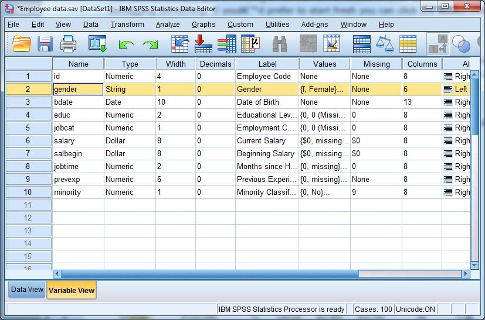
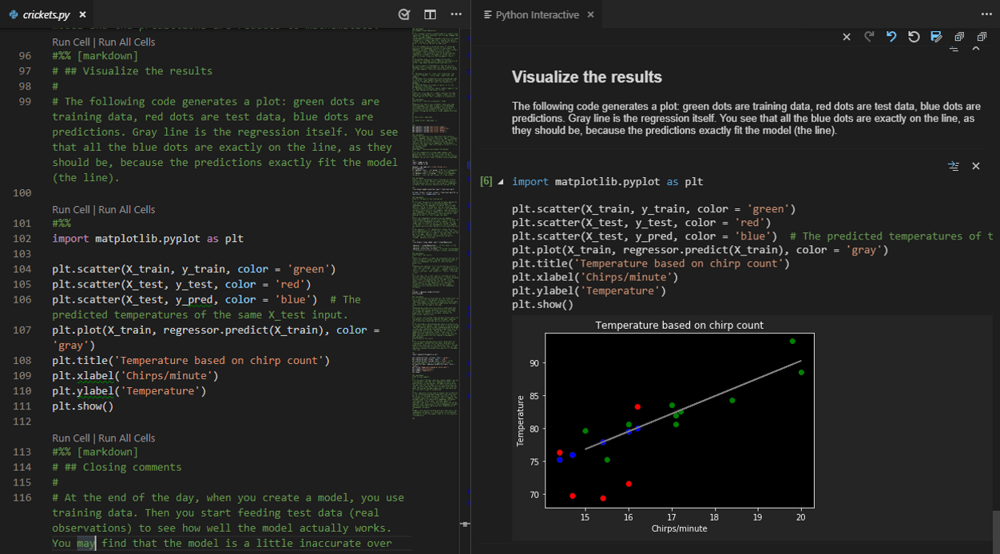
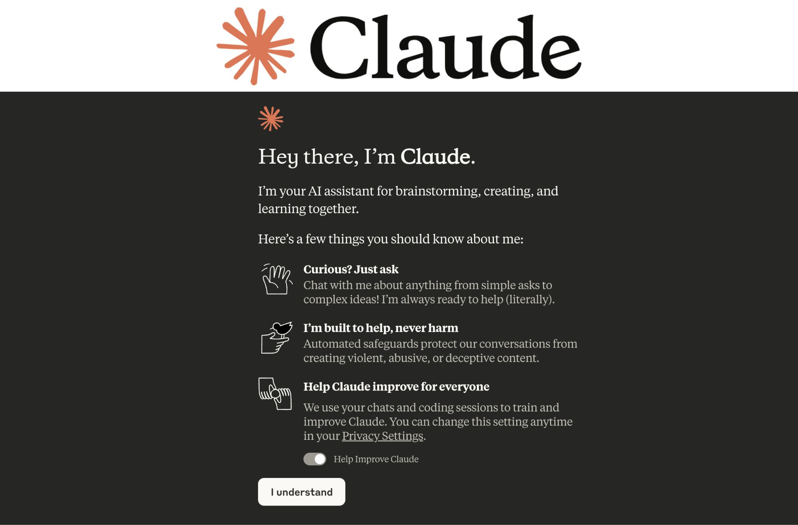

The Ecosystem
Four tools dominate quantitative analysis. None of them is "correct" — each trades off cost, flexibility, and how much code you need to write.

- Menu-driven — no coding to get started
- Standard in many health & social science programs
- Readable, ready-made output tables
- Expensive license
- Less flexible for custom analyses
- Point-and-click steps are easy to forget or misremember

- Industry standard for pharma & clinical trials
- Extremely stable, validated, audit-friendly
- Handles very large datasets well
- Steep learning curve
- Expensive
- Smaller free community than R or Python

- Free and open-source
- Built by statisticians, for statistics
- ggplot2 makes publication-quality graphics
- Steeper learning curve than SPSS
- Syntax can feel inconsistent across packages
- Memory-heavy on very large datasets

- Free and open-source
- General-purpose — stats, ML, automation, all in one
- Most popular language, so AI tools assist it best
- Statistical modeling tools are less mature than R's
- Steeper learning curve than SPSS
- More setup overhead (environments, packages)
Coding Languages
We'll use two languages side by side. You don't need to master both — pick one to start, and borrow from the other when it has something the first doesn't.
A general-purpose language widely used for data analysis, machine learning, and scientific computing. Valued for readable syntax and a huge package ecosystem.
Jupyter Notebooks & VS Code — Jupyter combines code, output, and narrative text in one document; ideal for exploring data and sharing reproducible work. VS Code is a lighter, more general editor many people use for the same job.
A statistical programming language built specifically for data analysis. The preferred language in many social, health, and behavioral science fields.
RStudio — the most widely used R editor. One window gives you a script editor, console, environment viewer, and plot pane together.
AI-Assisted Analysis
This whole workshop leans on AI-assisted coding: describing what you want in plain language and letting a model like Claude or ChatGPT write the Python or R code for you. No prior programming experience is required — but you do need to stay in the driver's seat.
What is AI-assisted coding?
Large language models — Claude, ChatGPT, GitHub Copilot — can write, explain, debug, and improve code. Instead of writing every line yourself, you describe what you want, and the model generates the corresponding code.
Benefits and limitations
- Lowers the barrier to entry for coding
- Speeds up repetitive tasks like cleaning and reshaping
- Explains code and statistical concepts instantly
- Helps non-programmers get unstuck quickly
- Can produce plausible-looking but wrong code
- Doesn't understand your research question — you do
- May suggest the wrong method with incomplete context
- Can't replace methodological judgment
When AI helps — and when it fails
Responsible use: four things to keep in mind
Meet the tools

Claude (Anthropic) — a general AI assistant. Claude Code is its terminal-based coding agent, good at writing and explaining full analysis scripts.
OpenAI Codex — OpenAI's coding agent, built on top of ChatGPT-family models, for writing and running code from plain-language instructions.
Prerequisites & Workflow
Before you start, make sure you have
The workflow loop
With enough repetitions, you'll get comfortable prompting AI yourself — the way a seasoned PhD does it. 🎓 You'll also get comfortable with the software itself, and start writing more of the code by hand.